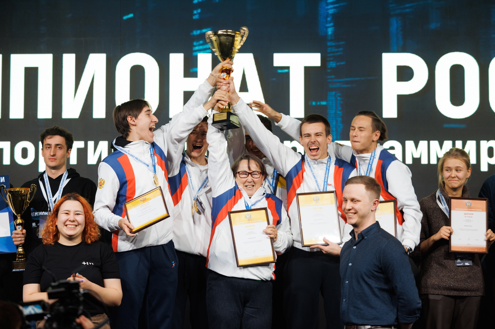
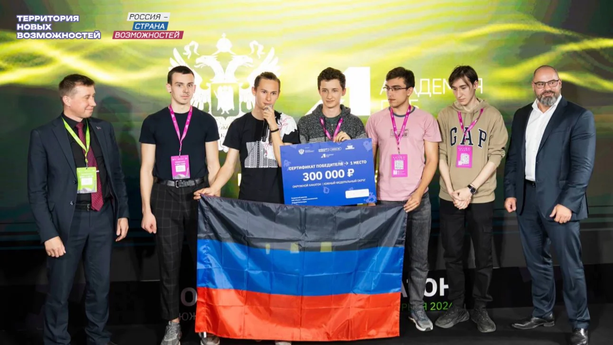

Моё увлечение хакатонами
Меня зовут Константин Руднев. Одно из моих главных увлечений - хакатоны. Это командные соревнования, в которых за ограниченное время нужно превратить идею в работающий программный продукт. Я участвую в них вместе с командой E-notGPT. Для меня это возможность решать новые задачи, пробовать технологии на практике и создавать что-то полезное вместе с людьми, которым так же интересно программирование (продуктовое, алгоритмическое и инфобез).
Почему мне интересны хакатоны
В программировании мне нравится путь от постановки задачи до результата, которым можно воспользоваться. На хакатоне этот путь приходится проходить особенно быстро. Приходится разобраться в проблеме заказчика, обсудить идеи, выбрать главное и показать работающий прототип. Здесь недостаточно написать отдельный удачный алгоритм, а нужно собрать решение, в котором согласованно работают интерфейс, серверная часть и обработка данных.
Меня привлекает сочетание технического творчества и командного соревнования. В одном кейсе приходится разбираться с изображениями и нейронными сетями, в другом — с документами, видео или информационной безопасностью. Такие задачи расширяют кругозор и дают повод изучить инструменты, до которых в обычной работе можно долго не добраться. При этом результат оценивается по тому, какую проблему он решает и насколько убедительно команда смогла его представить.
Моя команда E-notGPT и моя роль
E-notGPT объединяет разработчиков и специалистов по дизайну. В составе команды, с которой мы выступали на соревнованиях, — Иван и Леонид Сыгинь, Михаил Вавилин, Даниил Киселёв и я. На сайте команды моя специализация обозначена как Backend & AI / ML Engineer: серверная разработка и работа с технологиями искусственного интеллекта [1].
Моя основная работа на хакатонах связана с бэкендом, где я занимаюсь проектированием API, обработкой данных и объединением отдельных частей решения в общий сервис. В разных проектах это были анализ резюме, обработка видеоматериалов и извлечение информации из документов. Для этого мне пригодились C#, Python, SQL, опыт работы с базами данных, Git и Docker. На чемпионате 2025 года я также совмещал разработку серверной части с ролью продакт-менеджера — помогал определить, какие возможности продукта важнее реализовать в первую очередь.


Рисунок 1 — Награждение с участием E-notGPT. Фотография взята из сайта команды.
Соревнования и проекты, которые мне запомнились
Чемпионат России по спортивному программированию — 2023
В 2023 году E-notGPT стала победителем первого чемпионата России по спортивному программированию в дисциплине «Продуктовое программирование». В университетской публикации я указан в составе команды [2]. В этом проекте я занимался серверной частью сервиса имитации мошеннических атак для обучения пользователей. Такой кейс показывает, как программный продукт может помогать человеку распознавать опасные ситуации и внимательнее относиться к цифровой безопасности.
«Цифровой прорыв» в Сочи — 2024
На окружном хакатоне Южного федерального округа в апреле 2024 года наша команда заняла первое место в кейсе мониторинга цен на социально значимые товары. Мы работали над решением, в котором жители могли отправлять фотографию ценника с геометкой магазина, а ответственные специалисты — отслеживать обращения. Организаторы описали мобильное приложение и Telegram-бот нашей команды в публикации от 17 июля 2024 года [3]. Я участвовал в разработке системы определения и сравнения цен. Мне особенно близки такие задачи: обработка изображений и данных получает понятное практическое применение.


Рисунок 2 — E-notGPT с наградой за первое место на окружном хакатоне. Источник: «Россия — страна возможностей».
Новые задачи и развитие команды — 2024–2025
В 2024 году на хакатоне «Код мира» наша команда заняла пятое место; я разрабатывал бэкенд для анализа резюме произвольного формата и формирования портрета кандидата. На всероссийском хакатоне «Цифровой прорыв» в Москве я работал над микросервисом формирования коротких видеороликов из полнометражных материалов; в своём кейсе мы заняли четвёртое место.
Следующими важными результатами стали вторые места в финалах чемпионата России по продуктовому программированию в 2024 и 2025 годах. Серебро команды в 2024 году отмечено и в газете ДонНТУ [4]. Для меня эти выступления связаны с развитием от отдельной серверной задачи к пониманию продукта целиком: кому он нужен, как устроены его основные сценарии и что команда успеет качественно показать к защите.
Чему меня учат хакатоны
Хакатоны помогают мне развивать не только навыки разработки. В условиях ограниченного времени особенно важны ясные договорённости: какие данные получает каждый сервис, как взаимодействуют компоненты и кто отвечает за проверку общего сценария. Даже хорошая идея требует аккуратной реализации и понятной демонстрации.
- Выделять главное. Сначала определить проблему пользователя и минимальный набор возможностей, который действительно её решает.
- Работать в команде. Согласовывать API, помогать с интеграцией и вовремя сообщать о сложностях.
- Быстро учиться. Осваивать инструменты под конкретную задачу и проверять предположения на данных.
- Доводить решение до результата. Проверять работу продукта целиком и объяснять его пользу на защите.
Я хочу и дальше участвовать в хакатонах и развивать проекты, в которых искусственный интеллект помогает автоматизировать полезную работу. Это увлечение связано и с моими профессиональными интересами, и с темой магистерской диссертации: мне интересно не только изучать современные нейронные сети, но и находить для них практические задачи.
Магистры прошлых лет с близкими увлечениями
На портале ДонНТУ я нашёл близкие мне интересы у магистров предыдущих наборов. У одних это непосредственно хакатоны и спортивное программирование, у других — разработка программ и изучение новых проектов. По каждой ссылке можно прочитать об этом на персональной странице автора.
- Краморенко Евгений Геннадиевич — «Спортивное программирование». В индивидуальном разделе рассказывает о своём участии в олимпиадах, результатах на «IT-Планете» и интересе к соревнованиям по программированию.
- Слипенко Максим Константинович — «Программирование как стиль жизни». Описывает спортивное программирование, участие в хакатоне «Цифровой прорыв» в составе mzhn-team и разработку открытого ПО.
- Истягин Алексей Олегович — хакатоны и олимпиады. В резюме указаны выход в финал «КиберДонбасса — 2022», участие и победы в университетских олимпиадах по программированию и математике.
- Дворник Артём Николаевич — программирование. Называет программирование среди своих увлечений; его работа посвящена инструментарию для создания Telegram-чат-ботов, что близко моему интересу к разработке сервисов.
- Суханов Антон Алексеевич — программирование, проекты и стартапы. Среди увлечений отмечает программирование, исследовательские интересы и изучение интересных проектов и стартапов — близкую хакатонам среду поиска новых решений.
Источники
- E-notGPT — о команде, её составе и специализациях участников.
- Информационный бюллетень ДонНТУ, декабрь 2023 года — победа E-notGPT на чемпионате России и состав команды.
- «Два брата из ДНР развивают ИТ-технологии в регионе». «Россия — страна возможностей», 17 июля 2024 года — кейс мониторинга цен и победа E-notGPT.
- Газета «Донецкий политехник», № 12, декабрь 2024 года — серебро команды на чемпионате России.